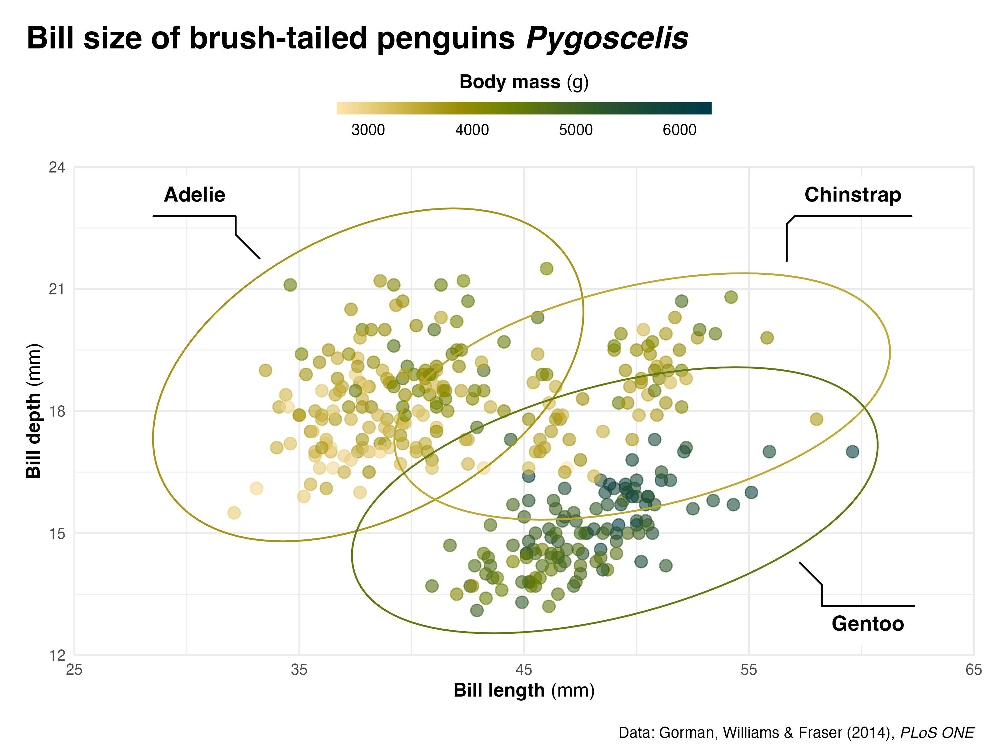
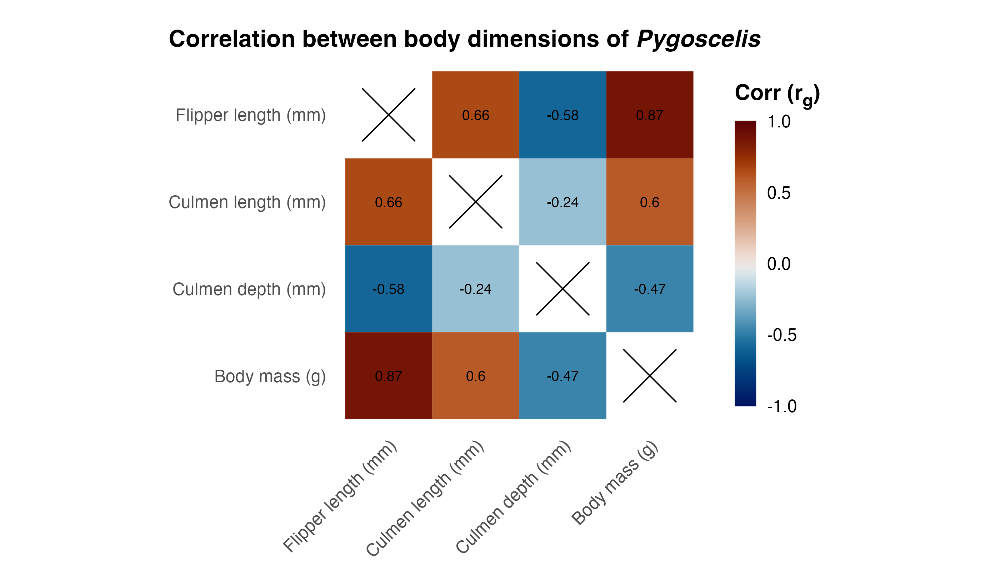

Enhancing plots in {ggplot2}
Daniel Roelfs
“It would be great if you could share your experience about plotting in R environment - how to make plots that are not only good at displaying results but visually satisfying at the same time.”
– Heemin
Chapter 1
Picking the right tool


|
|
|
|---|---|---|
| for | for | for |
tons of extensions (see also here) like {ggtext} and {ggdist} |
access ggplot-like syntax in Python |
powerful, but very steep learning curve |
| most popular at NORMENT | if you dislike matplotlib as much as I do but have to use Python |
you’re either very smart, or you have a stubborn supervisor |

Chapter 2
{ggplot2} showcase


“Okay these are cool,
but what about actually useful plots?”
– you, probably


{ggseg} package
Chapter 3
How to go from A to B?

Step 1
Add a theme
Step 2
COLORS
{viridis}

Scientific color maps


Step 3
Add labels
palmerpenguins::penguins |>
ggplot(aes(x = bill_length_mm, y = bill_depth_mm, color = body_mass_g)) +
geom_point() +
labs(title = "Bill size of brush-tailed penguins Pygoscelis",
caption = "Data: Gorman, Williams & Fraser (2014) PLoS ONE",
x = "Bill length (mm)",
y = "Bill depth (mm)",
color = "Body mass (g)") +
scale_color_scico(palette = "bamako", direction = -1) +
theme_minimal()Step 3b
✨ Fancy labels ✨
palmerpenguins::penguins |>
ggplot(aes(x = bill_length_mm, y = bill_depth_mm, color = body_mass_g)) +
geom_point() +
labs(title = "Bill size of brush-tailed penguins _Pygoscelis_",
caption = "Data: Gorman, Williams & Fraser (2014), _PLoS ONE_",
x = "**Bill length** (mm)",
y = "**Bill depth** (mm)",
color = "**Body mass** (g)") +
scale_color_scico(palette = "bamako", direction = -1) +
theme_minimal() +
theme(plot.title = element_markdown(size = 18, face = "bold"),
plot.caption = element_markdown(margin = margin(t = 15)),
legend.title = element_markdown(),
axis.title.x = element_markdown(),
axis.title.y = element_markdown())palmerpenguins::penguins |>
ggplot(aes(x = bill_length_mm, y = bill_depth_mm, color = body_mass_g)) +
geom_point() +
labs(title = "Bill size of brush-tailed penguins _Pygoscelis_",
caption = "Data: Gorman, Williams & Fraser (2014) *PLoS ONE*",
x = "**Bill length** (mm)",
y = "**Bill depth** (mm)",
color = "**Body mass** (g)") +
scale_color_scico(palette = "bamako", direction = -1) +
theme_minimal() +
theme(plot.title = element_markdown(size = 18, face = "bold"),
plot.title.position = "plot",
plot.caption = element_markdown(margin = margin(t = 15)),
plot.caption.position = "plot",
legend.title = element_markdown(),
axis.title.x = element_markdown(),
axis.title.y = element_markdown())Step 4
Move the legend
palmerpenguins::penguins |>
ggplot(aes(x = bill_length_mm, y = bill_depth_mm, color = body_mass_g)) +
geom_point() +
labs(title = "Bill size of brush-tailed penguins _Pygoscelis_",
caption = "Data: Gorman, Williams & Fraser (2014) *PLoS ONE*",
x = "**Bill length** (mm)",
y = "**Bill depth** (mm)",
color = "**Body mass** (g)") +
scale_color_scico(palette = "bamako", direction = -1,
guide = guide_colorbar(title.position = "top", title.hjust = .5,
ticks = FALSE,
barwidth = 15, barheight = 0.5)) +
theme_minimal() +
theme(plot.title = element_markdown(size = 18, face = "bold"),
plot.title.position = "plot",
plot.caption = element_markdown(margin = margin(t = 15)),
plot.caption.position = "plot",
legend.position = "top",
legend.title = element_markdown(),
axis.title.x = element_markdown(),
axis.title.y = element_markdown())Step 5
Final touches
palmerpenguins::penguins |>
ggplot(aes(x = bill_length_mm, y = bill_depth_mm, color = body_mass_g)) +
geom_point(alpha = 0.6, size = 1.5) +
labs(title = "Bill size of brush-tailed penguins _Pygoscelis_",
caption = "Data: Gorman, Williams & Fraser (2014), _PLoS ONE_",
x = "**Bill length** (mm)",
y = "**Bill depth** (mm)",
color = "**Body mass** (g)") +
scale_x_continuous(limits = c(30, 60)) +
scale_y_continuous(limits = c(12, 24)) +
scale_color_scico(palette = "bamako", direction = -1,
guide = guide_colorbar(title.position = "top", title.hjust = .5,
ticks = FALSE,
barwidth = 15, barheight = 0.5)) +
coord_cartesian(expand = FALSE, clip = "off") +
theme_minimal() +
theme(plot.title = element_markdown(size = 18, face = "bold"),
plot.title.position = "plot",
plot.caption = element_markdown(margin = margin(t = 15)),
plot.caption.position = "plot",
legend.position = "top",
legend.title = element_markdown(),
axis.title.x = element_markdown(),
axis.title.y = element_markdown(),
plot.margin = margin(15, 15, 5, 15))Chapter 4
“How to make the PNG file look like it does in my RStudio thingy”
Three things to consider
- Format
- Size
- Resolution

Chapter 5
Correlation plots are hard
Creating a correlation matrix
corr_matrix <- palmerpenguins::penguins_raw |>
janitor::clean_names() |>
select(culmen_length_mm:body_mass_g) |>
cor(use="complete.obs") |>
as.data.frame() |>
rownames_to_column(var = "var1") |>
pivot_longer(cols = 2:last_col(), names_to = "var2", values_to = "cor")
corr_matrix# A tibble: 16 × 3
var1 var2 cor
<chr> <chr> <dbl>
1 culmen_length_mm culmen_length_mm 1
2 culmen_length_mm culmen_depth_mm -0.235
3 culmen_length_mm flipper_length_mm 0.656
4 culmen_length_mm body_mass_g 0.595
5 culmen_depth_mm culmen_length_mm -0.235
6 culmen_depth_mm culmen_depth_mm 1
7 culmen_depth_mm flipper_length_mm -0.584
8 culmen_depth_mm body_mass_g -0.472
9 flipper_length_mm culmen_length_mm 0.656
10 flipper_length_mm culmen_depth_mm -0.584
11 flipper_length_mm flipper_length_mm 1
12 flipper_length_mm body_mass_g 0.871
13 body_mass_g culmen_length_mm 0.595
14 body_mass_g culmen_depth_mm -0.472
15 body_mass_g flipper_length_mm 0.871
16 body_mass_g body_mass_g 1 
corr_matrix |>
mutate(across(c(var1, var2), ~ str_replace_all(.x, "_", " ")),
across(c(var1, var2), ~ str_replace_all(.x, "mm", "(mm)")),
across(c(var1, var2), ~ str_replace_all(.x, "g$", "(g)")),
across(c(var1, var2), ~ str_to_sentence(.x))) |>
ggplot(aes(x = var1, y = var2, fill = cor)) +
geom_tile(data = . %>% filter(var1 != var2)) +
geom_point(data = . %>% filter(var1 == var2), shape = 4, size = 12) +
geom_text(data = . %>% filter(var1 != var2), aes(label = round(cor,2)), size = 2.5) +
labs(title = "Correlation between body dimensions of _Pygoscelis_",
x = NULL,
y = NULL,
fill = "Corr (r~g~)") +
scale_x_discrete(limits = rev) +
scale_fill_scico(palette = "vik", limits = c(-1, 1),
guide = guide_colorbar(barwidth = 0.75, barheight = 10, ticks = FALSE)) +
coord_equal() +
theme_minimal() +
theme(panel.grid = element_blank(),
plot.title = element_markdown(size = 12, face = "bold"),
plot.title.position = "plot",
legend.title = element_markdown(face = "bold"),
axis.text.x = element_markdown(angle = 45, hjust = 1),
axis.title.y = element_markdown(),
plot.margin = margin(15, 15, 5, 15))Chapter 6
Enhancing boxplots
palmerpenguins::penguins |>
ggplot(aes(x = species, y = body_mass_g)) +
geom_boxplot(width = 0.2, outlier.shape = NA) +
geom_jitter(aes(color = species), width = 0.05, alpha = 0.3, key_glyph = "point") +
ggdist::stat_halfeye(aes(fill = species), adjust = 0.5, width = 0.7, .width = 0,
justification = -0.2, point_colour = NA) +
labs(title = "Body mass in grams by species<br>for brush-tailed penguins _Pygoscelis_",
x = NULL,
y = "**Body mass** (_g_)",
color = NULL) +
scale_y_continuous(labels = scales::label_number(big.mark = "", suffix = " g"),
expand = expansion(add = c(500))) +
scale_color_brewer(palette = "Dark2", guide = guide_legend(override.aes = list(alpha = 1, size = 6))) +
scale_fill_brewer(palette = "Dark2", guide = "none") +
theme_minimal() +
theme(plot.title = element_markdown(size = 18, face = "bold"),
plot.title.position = "plot",
legend.position = "top",
legend.text = element_markdown(face = "italic"),
axis.text.x = element_markdown(face = "bold"),
axis.title.y = element_markdown(),
plot.margin = margin(15, 15, 10, 15))Chapter 7
Where to find inspiration?
Where to find examples?
Data before aesthetics
Acknowledgements
Cédric Scherer for creating excellent inspirational and teaching resources for {ggplot2}, see also here and here
Linn-Sofie Sæther for helping set the curriculum
This presentation was created using Quarto, see here for the source code for this presentation
Resources
How to dodge the pitfalls of bad illustrations, Chris Woolston, Nature (2014), 10.1038/nature.2014.15999
Ten Simple Rules for Better Figures, Nicolas P. Rougier, Michael Droettboom, and Philip E. Bourne, PLOS Computational Biology (2014), 10.1371/journal.pcbi.1003833
The misuse of colour in science communication, Fabio Crameri, Grace E. Shephard, and Philip J. Heron, Nature Communications (2020), 10.1038/s41467-020-19160-7
{ggtext} package, Claus Wilke, github.com/wilkelab/ggtext
{scico} package, Thomas Lin Pedersen, github.com/thomasp85/scico